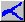
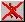

- File
- View
- Release
- Reservoir
- Behavior
- Flow
- Dam
- Passage
- Run
- Analysis
- Help
 Open/Read a parameter data file into the model (see Reading Data into COMPASS for details).
Open/Read a parameter data file into the model (see Reading Data into COMPASS for details).
 Save parameter data to a file (see Model Parameter Data Files for details on file types).
Save parameter data to a file (see Model Parameter Data Files for details on file types).
 Print Map.
Print Map.
 Display or hide River Map.
 Display or hide Latitude/Longitude (LatLon) Grid.
Display or hide Latitude/Longitude (LatLon) Grid.
 UnZoom one level of zoom stack for the River Map.
UnZoom one level of zoom stack for the River Map.
 Run model in Scenario Mode.
Run model in Scenario Mode.
 Cancel a run in either Scenario or Monte Carlo Mode.
Open Mouse Tool to redefine mouse button functions on the River Map.
- Indicates which Reach, Dam or Headwater is active. This is determined by the position of the pointer as it is moved across the map. Opening windows with the Mouse Tool is dependent on which Reach, Dam or Headwater is active in the Status Bar. In addition, it shows the status of the model as each segment is computed during a run in either Scenario or Monte Carlo mode.
- Indicates which Release Site is active. This is determined by the position of the pointer as it is moved across the map.
- Displays the longitude and latitude coordinates of the pointer as it is moved across the map.
- Displays the current time as determined by the local system.